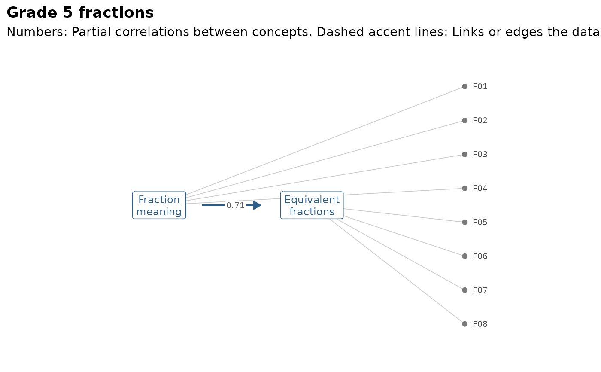

Draws the graph as gg_kg() does and marks what mv_kg_fit() found:
Concepts and items with flags in the accent colour, suggested new edges
and item links as dashed accent lines, and the partial correlation of
each pair of related concepts next to its edge.
Arguments
- fit
a result of
mv_kg_fit().- items
"flagged"(the default) to draw only the items with flags,"all", or"none".- labels
"label"or"node", as ingg_kg().
Examples
kg2 <- mv_kg_subset(fractions_kg, c("meaning", "equivalent"))
gg_kg_fit(mv_kg_fit(kg2, fractions, TOL = 0.01), items = "all")
#> Warning: Observed log-likelihood may still be increasing.
#> Final log-likelihood values were:
#> -5210.991, -5210.101, -5209.399
